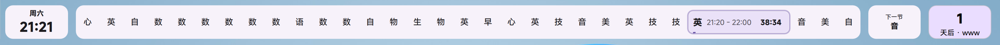

功能特性
简单实用，专注课堂
每一个功能都是为了让您的课堂管理更高效
实时课表显示
当前课程高亮显示，自动切换到下一节课，一目了然
换课管理
临时调整某天的课程顺序，支持恢复操作
调休日
将周末按指定工作日课表运行
自定义提示音
课前/课中/课末自定义提示音与音量
自动隐藏
上课时隐藏、窗口最大化时隐藏、全屏时隐藏
主题定制
缩放、透明度、字体切换，内置 MiSans 字体
迷你模式
紧凑显示，节省屏幕空间，不遮挡视线
系统托盘
托盘图标快速访问所有功能，便捷管理
单实例运行
防止程序重复启动，确保运行状态
界面预览
精致界面，赏心悦目
基于 Material Design 3 设计风格，现代简洁

技术栈
现代技术，稳定可靠
使用业界成熟方案构建
Python 3.14+
简洁优雅的编程语言
PySide6 + QML
跨平台 UI 框架
Material Design 3
现代化设计风格
PyInstaller
单文件 exe 打包
下载
立即下载，即刻使用
单文件绿色软件，下载即用
使用说明
开始使用，只需三步
免费开源，简单易用
1
运行程序
双击 ClassBoard.exe 即可启动
2
导入课表
支持 CSES 格式课表
3
配置完成
托盘快速访问所有功能